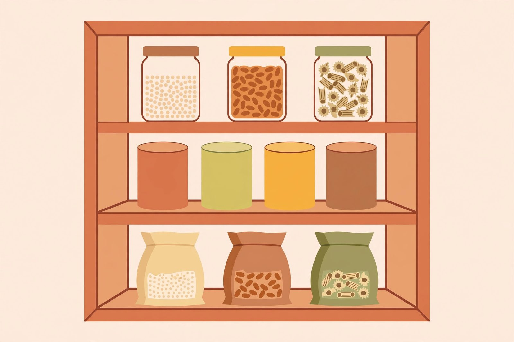

The pantry staples worth always keeping

Everyone has opened a cupboard at 6pm, stared at the contents, and concluded there was nothing to eat. Half the time that's true. The other half, the cupboard is full — it's just full of things with no plan attached. A good pantry isn't a big one. It's a small, deliberate set of shelf-stable ingredients that combine into real dinners.
Think in building blocks, not recipes
The mistake is stocking for specific recipes: the one can of artichoke hearts for the dish you made once, the specialty grain bought for a single meal. Instead, stock categories. Each category should answer the question "what does this give a meal?" Grains and pastas give bulk. Beans and lentils give protein and body. Canned tomatoes give sauce and acidity. Oils, vinegars, and seasonings give flavor. With one strong pick from each category, you can build dozens of dinners without a single recipe.
The grains and starches
Pick two or three you'll actually cook. Long-grain or medium-grain rice is the workhorse: it goes under stews, into soups, and into fried-rice-style skillets. Pasta in a short shape like penne or fusilli catches sauce better than long noodles in pantry cooking. Oats (rolled, not instant) double as breakfast and as a thickener or filler in meatballs and loaves. If you like lentils, dried red lentils are especially forgiving — they cook in about twenty minutes with no soaking and melt into soups and sauces beautifully.
The proteins
Canned beans are the backbone: chickpeas, black beans, kidney beans — whatever your family actually eats. They're cooked, seasoned easily, and ready in minutes. Canned tuna and canned salmon turn into salads, patties, and pasta toppings. Dried beans are cheaper per serving, but only buy them if you'll really soak and cook them; the "right" choice you never cook is the wrong choice. Peanut butter counts here too — it's shelf stable for months, protein-dense, and turns into satay-style sauces, noodle toppings, and energy-dense snacks.
The cans and jars
Canned tomatoes (whole or diced) are the single most useful canned vegetable. They become pasta sauce, soup base, chili, and curry in minutes. Keep a tube or small cans of tomato paste for depth when fresh acidity isn't enough. Coconut milk transforms canned beans and vegetables into a curry-style dinner. And don't overlook canned corn, peas, and mixed vegetables — they're at their best simmered into soups and stews, where texture matters less.
Broths, sauces, and flavor
This is where bland cupboard cooking goes wrong. Stock or broth — even bouillon cubes or paste — turns water into soup. Soy sauce, a decent hot sauce, and vinegar (white and apple cider) give you the salty-sour-heat triangle that makes plain grains taste like a meal. A jar of peanut butter was mentioned above; a jar of curry paste or a bottle of salsa can rescue a tired week. Cooking oil and olive oil round it out. Dried spices lose potency over time, so buy small quantities and replace yearly; if your ground spices are older than that, they still work — you just need more of them.
Buy for your actual habits
The final rule is the one that matters most: keep what your household already likes. A pantry full of chickpeas nobody will eat is just organized waste. Look at the last month of dinners your family genuinely enjoyed and stock the shelf-stable versions of those ingredients. A cupboard that reflects how you actually eat is worth more than a perfectly stocked one built from someone else's list.
Rotating without the hassle
Canned goods keep for years, but they taste better used within a year or two. The simplest rotation system is no system at all: new cans go to the back, old cans come forward, and once a month you cook one "use it up" meal from whatever's oldest. Check dates when you do your inventory — and if a can is bulging, rusted, or leaking, throw it out without tasting it. That's not being wasteful; that's food safety.